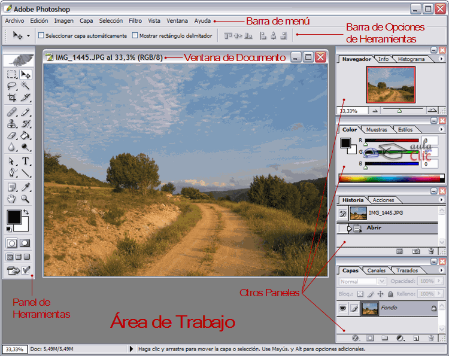

Estructura del curso
Alicia Contreras Rico
2019
Sección I: La fotografía I
Estudio
Se estudiará con la presentación de HTML5 con reveal.js
Introducción
- Historia de la fotografía
La cámara de fotos
- Qué es una cámara de fotos
- Partes de la cámara

Tipos de cámaras
- Compacta
- Réflex
La exposición: abertura del diafragma y velocidad de obturación
- Abertura de diagragma
- Velocidad de obturación

Selector de modos
- Modo automático
- Modo semiautomático
- Modo manual
- Modo vídeo
Sensor de la imagen
- Qué es el sensor
- Tecnología de los sensores: CCD y Super CCD, CCD RGBE, CMOS, Foveon X3
- Puedes ampliar información aquí
Objetivos fotográficos
- Qué es un objetivo fotográfico
- Características
- Partes de los objetivos
Sección II: La fotografía II
Estudio
Esta parte se estudiarán los conceptos relacionados con la luz, con unos apuntes en formato EPUB
Propiedades de la luz
Dirección Si viene de arriba es natural y de abajo no natural Intensidad Si intensidad suficiente de luz para darle la oportunidad de captar la escena con la posición correcta
Calidad de la luz Cuanto más pequeña sea la fuente de luz, más espectacular o dura será la luz que produce. Temperatura Cuando la temperatura de la luz tiende hacia el lado naranaja, produce en el espectador un sentido cálido.
Aspectos de la luz que se van a estudiar I
- Cómo podemos controlar la luz.
- La exposición correcta
- El modo automático y el manual
- Velocidad y movimiento
- Abertura y profundidad de campo
- La sensibilidad del sensor
- La ecuación de la exposición
- Analogía entre la luz y el agua
- Abertura óptima f 8
Aspectos de la luz que se van a estudiar II
- Características físicas de la luz: la luz es una radiación que emiten los átomos
- El espectro visible: la luz está formada por ondas electromagnéticas y forma parte del espectro electromagnético
- La reflexión de la luz: la luz incide en un cuerpo es reflejada por él.
- La refracción: la luz no se comporta igual al atravesar materiales de diversa composición.
Sección III: La imagen digital
Estudio
Esta sección se estudiará con una presentación creada con Beamer, la imagen digital
Elementos de la imagen
- Píxel
- Tamaño de la imagen
- Dimensiones
- Tamaño de almacenamiento
- Resolución
El Color
- Profundidad de color
- Sistemas de representación de color
- Modelo RGB
- Modelo CMYK
- Transparencia
- Transparencia Simple
- Transparencia de canal alfa
Más información aquí
La Imagen
| Tipo de imagen | Definición | |
|---|---|---|
| Rasterizada | Rejilla rectangular, raster | |
| Vectorial | Formada por objetos geométricos independientes |
La Imagen II
Conversión entre formatos raster y vectorial
- Vectorización
- Transformación de un gráfico rasterizado en uno vectorial
- Rasterización
- Es el proceso inverso a la vectorización
- Convertir una imagen vectorial en un gráfico rasterizado
Sección IV: Introducción a Photoshop
Estudio
Se estudiará con una presentación creada con Beamer, Photoshop
Introducción
- Qué es Photoshop

Entorno de trabajo
- Inicio
- Barra menú

Herramientas
| Herramienta | Tipo | Función |
|---|---|---|
| Pincel | De pintura | Para hacer trazos suaves |
| Lápiz | De pintura | Para hacer trazos opacos |
| Borrador | De borrado | Para borrar |
| Cuentagotas | De pintura | Para seleccionar colores |
Capas
- Definición
- Crear nuevas capas
Sección V: Guión de prácticas
Estudio
Se presentarácon un documento en pdf
Cuestionario de evaluación
- Breve cuestionario en el que se evalaurán los conocimentos teóricos estudiados a lo largo del curso
Creación de un portfolio
- Es el momento de poner en práctica lo aprendido. Se deberá realiar un portfolio que incluyan diferentes variedades de temas fotografiados
Ideas de diferentes motivos para elaborar un portfolio original
Participación en un concurso
- Para conseguir que tu obra se convierta en la próxima portada de la revista de nuestra organización.